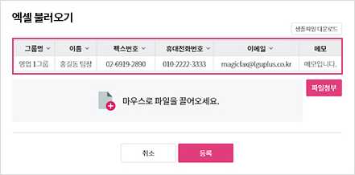

1. 주소록에서 추가 방법
-
① 직접 입력
- 주소록 입력창에서 직접입력 또는 Local 문서에서 복사하여 추가하실 수 있습니다.
- [새행 추가] 버튼으로 행을 추가하여 주소를 입력하실 수 있습니다.
- 해당 주소를 삭제할 경우 체크박스에 체크를 한 후 [행삭제] 버튼으로 삭제합니다.
- 그룹명을 선택하고, [저장]을 클릭하여 완료합니다.
- 그룹명을 지정하지 않을 시에는 그룹없음을 선택합니다.
-
② 엑셀 불러오기
- 엑셀 불러오기 버튼을 클릭하여 [샘플파일 다운로드]하여 서식을 완성합니다.
- 반드시 아래 예시와 같은 순서로 작성되어야 하며, 텍스트 형식으로 입력해주시기 바랍니다.
- 대표번호를 등록하실 경우 해당 지역번호까지 입력해주셔야 합니다.
(예 : 대표번호가 1544-8007(서울)일 경우 02-1544-8007 입력)
- [파일 첨부]를 클릭하여 해당 서식파일을 첨부합니다.

2. 팩스 보내기에서 추가
수신번호 입력 후 체크박스에 체크 후 [주소록 추가] 버튼으로 주소록에 추가할 수 있습니다.
3. 받은팩스함에서 추가
주소록에 등록되어 있지 않다면 발신번호에 마우스커서를 올려 [주소록 추가] 버튼으로
주소록에 바로 등록할 수 있습니다.
등록 후에는 보낸사람 항목에 이름과 해드폰 번호가 노출됩니다.
4. 보낸팩스함에서 추가
주소록에 등록되어 있지 않다면 수신번호에 마우스커서를 올려 [주소록 추가] 버튼으로
주소록에 바로 등록할 수 있습니다
등록 후에는 받는사람 항목에 이름과 해드폰 번호가 노출됩니다.